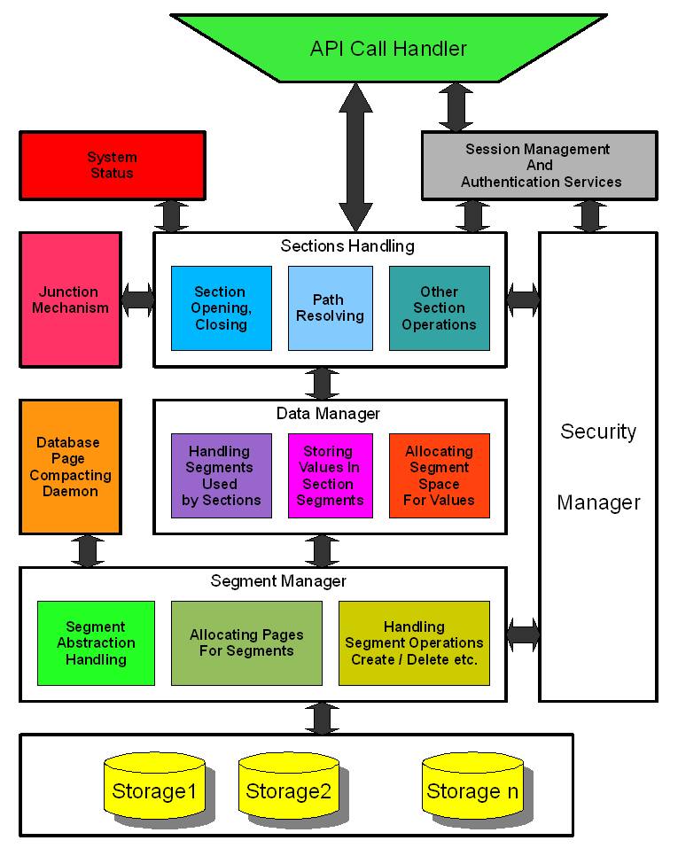

The storage subsystem handles the page layer for each storage. Each database file is treated as a separate storage unit. Junctions are used to map all storages into the namespace. Two storages are managed differently, than the ordinary storages related to files. The first storage is located in memory, it contains the standard database sections. These sections are volatile, so they are created each time, during the engine startup. The second is located in a temporary file. It is not mapped into namespace, but used internally for snapshots. It is also prepared for future implementation of transactions. In case of file storage the separate thread is created for each file. It processes the requests of page loading into core cache of each storage unit. When the cache is full, the LRU pages are discarded, dirty discarded pages are stored in pre-write temporary file.
| Related Classes |
| DataPage::TPageCache |
| Storage::TStorage and subclasses |
| Storage::TStorageHandlerTask |
| Storage::TDataFile |
| Storage::TTempFile |
| Storage::TAdvPageRef |
The segment manager is responsible for segment layer handling. It translates in-segment relative pages numbers to absolute page numbers and vice versa, allocates space for new pages within segment, handles creation and deletion of segments.
| Related Functions And Classes |
| Storage::TStoragePageAlloc |
| TSegment |
| TAdvancedSegment |
| SEGMENT_* functions |
When some, not neccessarily adjacent pages are deleted, the structure of file is no longer contiguous, the gaps appear. It leads to situation, when the database file takes far more disk space, than it could. So, the compacting mechanism is very desirable. It is implemented in a separate thread, that is active only when no client application is running (it is achieved by lock of the TDBManager object).
| Related Classes |
| TCompactBase |
| TCompactTask |
The task of data manager is to manage lower part of section layer. Its code implements the structure of data blocks related to items, and associated operations such as adding, modifying, deleting items etc.
| Related Functions And Classes |
| TSectionSegment |
| TSectionSegmentCompact |
| Util::Segment::* functions |
The purpose of its subsystem is in order to handle upper part of section layer. The data manager itself does not understand the difference between section items and subsections. Just this module (Section Handling) manages the special treatment of subsections. Besides it is responsible for opening, closing sections and, resolving and other section operations.
| Related Functions And Classes |
| TSection |
| SECTION_* functions |
Only the memory storage is directly mapped into namespace "\". The other storages require some extra solutions to be visible in the namespace. It is the task of the junction mechanism. A junction point is a pair of source and target sections addresses represented by database and segment ID.source( databaseId, segmentId ) -> target(databaseId, segmentId )When any found subsection matches a junction source, the translation is performed. There are 2 kinds of junction points global and local, that are used only by one thread. Junction points can be compound, that are both global and local. Let us consider \CurrentUser. The segment corresponding to section CurrentUser on memory storages is first globally translated to reserved value ( -1, 10 ). Later it is locally translated to the segment related the current user.
| Junction Point | Target |
| \CurrentUser | \RootStorage\Users\<<CurrentUserId>> |
| \LocalMachine | \RootStorage\Users\<<ComputerName>> |
| \RootStorage | The root section of file treebase.dat |
| \RootStorage\Users | The root section of file users.dat |
| \Databases | The root section of file databases.dat |
| \RootStorage\Databases | The root section of file databases.dat |
| Related Functions |
| Junction::* functions |
Each section has an associated entity about security attributes. In fact it is managed at segment layer - each dynamically created segment has an associated information about its security attributes. The security attributes are stored in a special purpose segment, one for each storage. The users are identified by internal UIDs represented in UUID format.
| Related Functions And Classes |
| Security::Manager::* functions |
| Security::TSecurityAttributes |
This is an intermediate layer between OS users and the security manager. It translates the OS user IDs to the internal IDs and vice versa. Besides it is responsible for proper initialization of junction points for sections \CurrentUser and \LocalMachine.
| Related Functions |
| Security::Facade::* functions |
| Session::* functions |
It is responsible for showing the information about system resources in the \System\Status section. The daemon thread periodically analyses the internal status table and updates the corresponding in-memory sections.
| Related Functions And Classes |
| System::TSystemStatus |
| System::addSession |
| System::removeSession |
| System::addDatabase |
| System::removeDatabase |
| System::setAlarm |